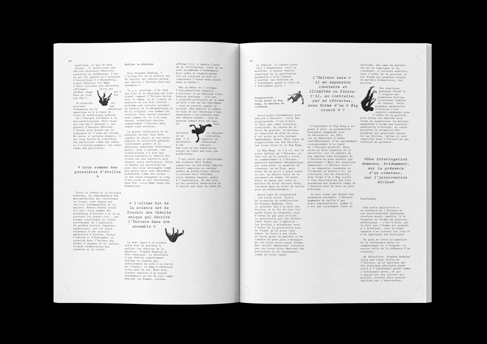
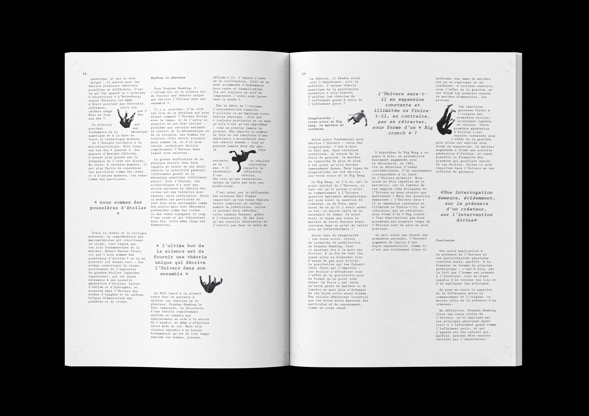

4 affiches
60 x 80 cm
L’affiche aborde des affaires de corruption d’hommes politiques : celle de Jacques Chirac, de Jérôme Cahuzac, de Nicolas Sarkozy et de Patrick Balkany.
Elle cherche à montrer ces derniers sous un même visage afin de communiquer l’idée que, malgré leurs différences, les scandales politico-financiers utilisent les mêmes mécanismes. Les affaires se répètent et se ressemblent…
Les FARC ou Forces Armées Révolutionnaires de Colombie, sont une guérilla organisée colombienne qui a lutté contre le gouvernement de 1964 à 2016. C’est un mouvement d’origine communiste qui a donné une grande place aux femmes dans son combat.
Guerrilleras cite l’affiche de propagande américaine par J. Howard Miller “We Can Do It !”, emblême du féminisme blanc, capitaliste et libéral, et change le sujet pour que la femme devienne une guerrilleras, une femme racisée qui combat ce système inégalitaire occidental.
L’affiche convoque les références historiques et mythologiques du poème El Desdichado de Gérard de Nerval, poète peu accessible dont le langage est opaque. Mélancolie Heureuse cherche à représenter ce dont parle le poème afin de le percevoir visuellement, plus que textuellement.
L’affiche reprend la psychose collective liée à l’invasion de punaises de lits en décembre 2023 en France.

Journal
29,7 x 42 cm
80 pages
Le journal regroupe les articles de presse et articles universitaires nécessaires à la création des 4 affiches. L’iconographie convoquée s’intègre dans le texte qui se déplie autour des formes.
 
